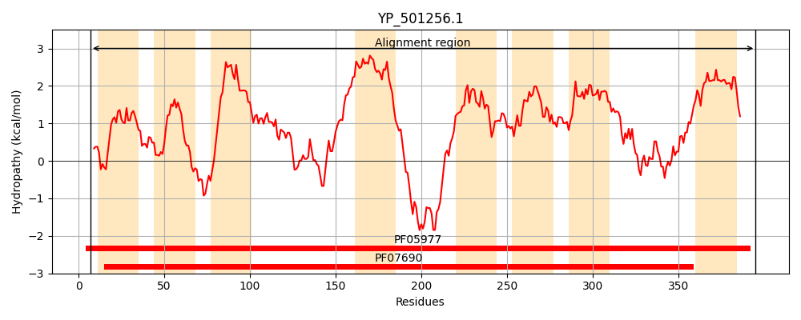
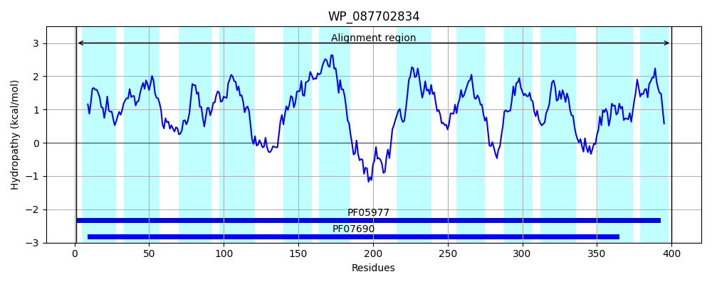
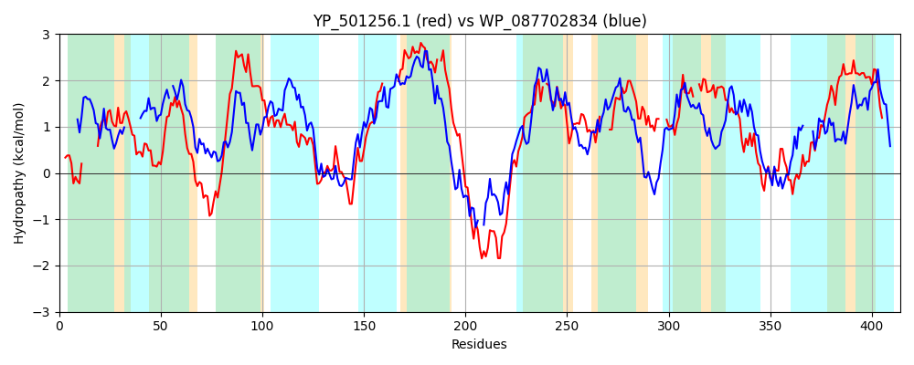

Hit Accession: WP_087702834
Hit TCID: 2.A.1.62.4
Hit Description: gnl|BL_ORD_ID|21545 gnl|TC-DB|WP_087702834.1|2.A.1.62.4 MFS transporter [Clostridium diolis]
Mach Len: 414
e:0.000000
Query TMS Count : 8
Hit TMS Count: 12
TMS-Overlap Score: 8.200000
Predicted Substrates:None
BLAST Alignment:
Score: 238 , Bit scores: 96 bits, E-value: 5.8e-22, Alignment length: 414, Percentage identity: 23
Query: 7 LKNRNFTYLLIG-------NFLRRSCFVLFSLQIIWFTVELTNQSSLKLSMMVMSQTLPFIIFGIFGGAYSDKHNKKKILYLSDLILSLIIIIIPLLAITSNLNYLTLLTISTAITIINCYTDPAFRAILPEIIDEEHLATSNALIDSLQRGSNIILPAL-------IGVIVILVGNVGVFFICSIL-LFLGFIFNALLKYTNNNMIDRHSKEDFSETWEFLKQSKEIPFIIIIQFACI-LINTGLWRVVLPLFISNILKEGVGVYG----LATSCLGIASLLMSLIMGLLSEKRL---IFKFSIGVLVWGIG--LSIINVFPSVAILYIGATLLGLGQSIEGLTRSVAIQIKTPNHLMGKVFSISSTSNYAADTLSLGLISIIIPLLSLSNIFILGGVIISILSLAGLKFVKK 395
++N+NF ++IG N ++R C L+ L LT + + +++ +S T+P+++F G +D N+KKI+ D + S+++ ++ ++ N + + + +++I PA A +P+II++E L ++N +I + N++ P L IG+ ++++ N F IC+IL LFL + + N ++ S ++ +++ +LK+ K I II+ +A + + VV P FI+ + +YG + + + I + ++ L S K+L ++ I +++ GI L+ N F + + G + L ++ + IQ + ++GKV + S+ A T+S+ +I L N + VI++ +S G+ + K
Sbjct: 1 MRNKNFIIIVIGQIISLFGNAIQRFCMSLYILN-------LTGSAGVFSTILAIS-TIPYVLFAPIAGFLADTVNRKKIMVYLDFVSSVLMGAYGIILMSGRDNTIIVGIVMFMLSVIYTLYSPAVTASIPQIIEKEKLPSANGIIQQVGYVVNLLGPVLGGILYSFIGIKLVVIINAISFLICAILELFLNIPDLEIREKFKNPIL--KSIKEMKKSFIYLKERKTIVLGIIVSYALTNIFVVPILSVVTPYFINIQMSLPSSMYGFIEAIFVAGMIIGGMAITFRPKLFSVKKLHKTMYPMVIALIIMGIAVYLNAENKFFILGLYSFGGFGIMLSLALSNIISLNYIQQEVRGDMLGKVSAFST----AVATVSVPPGQLIFGQLIDFNFSLFSIVILTTISSVGVVYFIK 400 | Protein Hydropathy Plots: |
|---|
|  |  |
Pairwise Alignment-Hydropathy Plot:
|
|---|
|  |